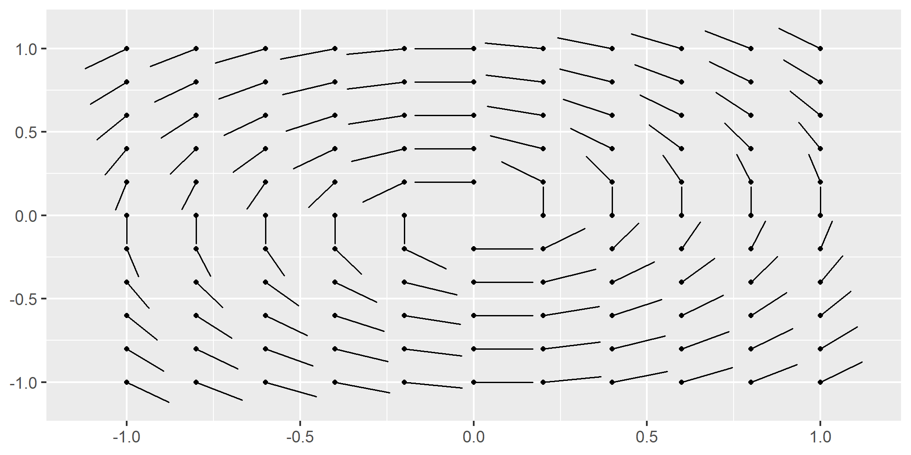
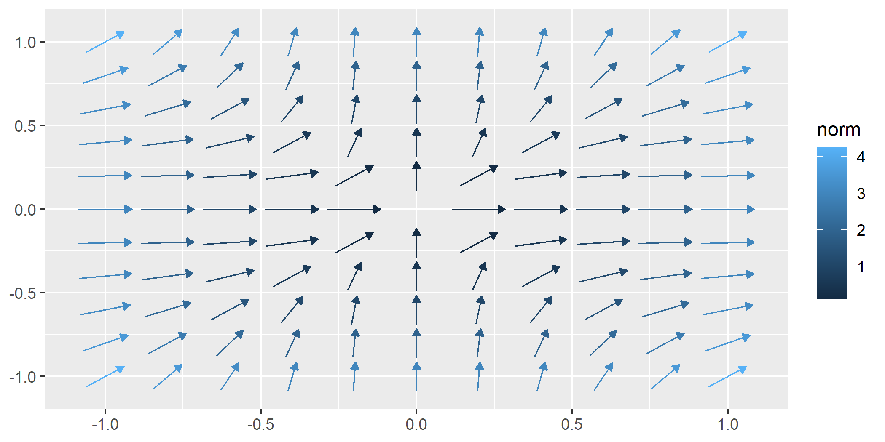

ggvfields provides tools for visualizing vector fields, stream plots, and smoothed vector fields.
library("ggvfields")
#> Loading required package: ggplot2
options(ggplot2.continuous.colour="viridis")
set.seed(1234)
n <- 10
(wind_data <- data.frame(
"lon" = rnorm(n),
"lat" = rnorm(n),
"dir" = runif(n, -pi, pi),
"spd" = rchisq(n, df = 2)
) |>
within({
dx <- spd * cos(dir)
dy <- spd * sin(dir)
}))
#> lon lat dir spd dy dx
#> 1 -1.2070657 -0.47719270 0.33510483 3.5473948 1.16662525 3.35007394
#> 2 0.2774292 -0.99838644 0.91989662 2.1892467 1.74163111 1.32646984
#> 3 1.0844412 -0.77625389 -1.18234275 2.9860220 -2.76355109 1.13097871
#> 4 -2.3456977 0.06445882 0.76541260 10.8072250 7.48761916 7.79305272
#> 5 0.4291247 0.95949406 -1.06958553 3.4477308 -3.02366484 1.65659245
#> 6 0.5060559 -0.11028549 0.01255049 3.9071427 0.04903528 3.90683495
#> 7 -0.5747400 -0.51100951 1.11271773 0.1561561 0.14005697 0.06905621
#> 8 -0.5466319 -0.91119542 -0.09430283 0.4239639 -0.03992176 0.42208012
#> 9 -0.5644520 -0.83717168 -1.60894263 0.4160735 -0.41577077 -0.01586782
#> 10 -0.8900378 2.41583518 1.66793304 4.1721572 4.15248944 -0.40463261
round(wind_data, digits = 2)
#> lon lat dir spd dy dx
#> 1 -1.21 -0.48 0.34 3.55 1.17 3.35
#> 2 0.28 -1.00 0.92 2.19 1.74 1.33
#> 3 1.08 -0.78 -1.18 2.99 -2.76 1.13
#> 4 -2.35 0.06 0.77 10.81 7.49 7.79
#> 5 0.43 0.96 -1.07 3.45 -3.02 1.66
#> 6 0.51 -0.11 0.01 3.91 0.05 3.91
#> 7 -0.57 -0.51 1.11 0.16 0.14 0.07
#> 8 -0.55 -0.91 -0.09 0.42 -0.04 0.42
#> 9 -0.56 -0.84 -1.61 0.42 -0.42 -0.02
#> 10 -0.89 2.42 1.67 4.17 4.15 -0.40Usage
geom_vector(): Visualizing Individual Vectors
geom_vector() is designed to visualize individual vectors, which are essentially just line segments with (typically) arrow heads to signify their direction. As line segments, they are naturally represented as 2 points-2 (x,y) pairs-signifying the start point and the end point, where the end point signifies the direction of the vector. This already possible using geom_segment(); however, ggvfields’s geom_vector() provides a bit more support.
ggvfields can plot vectors specified by either Cartesian (dx, dy) or polar (angle, distance) components. It’s especially useful for directional data like wind patterns or flow fields.
By default, the length aesthetic is mapped to after_stat(norm), meaning the vector length reflects its magnitude. More details in this section: New Feature: Mapping Norm to the Length Aesthetic.
ggplot(wind_data) +
geom_vector(aes(x = lon, y = lat, dx = dx, dy = dy))
If you’d prefer to use dots on the tails instead of arrow heads, those are available, too:
ggplot(wind_data) +
geom_vector(
aes(x = lon, y = lat, dx = dx, dy = dy),
tail_point = TRUE, arrow = NULL
)
For polar coordinates, the vector is defined by an angle and distance:
ggplot(wind_data) +
geom_vector(aes(x = lon, y = lat, angle = dir, distance = spd))
New Feature: Mapping Norm to the Length Aesthetic
One of the innovations of ggvfields is the ability to map the norm of vectors directly to their length using a length aesthetic. This feature allows for a more intuitive representation of vector magnitudes. The length of each vector directly corresponds to its computed norm - making it easy to compare vector magnitudes visually within the plot.
Traditionally, vector fields represent direction and magnitude through arrows of uniform length. This leaves magnitude to be inferred from color gradients or external legends. With ggvfields, the length aesthetic allows users to visually intuit vector magnitude simplifying their interpretation.
A particularly important aspect of this feature is that the vector lengths in the plot are accurately reflected in the legend. This allows viewers to match the visual representation of length directly with the legend’s magnitude scale. This frees up the color aesthetic for use in visualizing other information about the vector field.
Why Use the Length Aesthetic?
- Clearer Representation: Vectors with larger norms appear longer, making magnitude comparison straightforward.
- Length-Consistent Legends: The lengths of vectors in the plot are directly tied to the values shown in the legend, ensuring a consistent and accurate visual guide.
- Enhanced Visuals: Length variations add an extra layer of information to the plot, complementing existing aesthetics like color.
- Flexible Customization: Combine length mapping with other aesthetics such as color gradients or transparency for even richer visualizations.
Example: Mapping Norm to Length
By mapping the norm of a vector to the length aesthetic, users can directly observe differences in vector magnitude based on the vector’s actual size. You can do this by length = after_stat(norm) or geom_vector2() can do this by default.
In this example, the norm of the wind vectors is mapped to their length:
ggplot(wind_data) +
geom_vector(
aes(x = lon, y = lat, dx = dx, dy = dy, length = after_stat(norm)),
arrow = NULL, tail_point = TRUE
)
geom_vector_field(): Visualizing Vector Fields
The geom_vector_field() function creates a vector field plot using a user-defined function to compute vector components. This abstraction simplifies the mathematical computations involved in vector field visualizations. Users no longer need to manually calculate vector components for geom_segment().
Two important options in geom_vector_field() are normalize and center - both of which default to TRUE. These options help control the visual representation of vectors:
normalize: When set to
TRUE, this option scales each vector to have a unit length, which can help avoid overplotting in dense vector fields. This is especially useful when the direction of vectors is more important than their magnitude. However, it’s important to note that normalize is different from mapping the norm of the vector to the length aesthetic. While normalization ensures that all vectors are visually uniform in length, mapping the norm to length preserves the relative differences in magnitude by varying the vector lengths based on their actual norms.center: By default, center is also set to
TRUE, meaning the midpoint of each vector is placed at the corresponding(x, y)coordinate, effectively “centering” the vector on the point. WhencenterisFALSE, the base of the vector is anchored at the(x, y)point, and the vector extends outward from there. This is useful when the vector field is meant to represent flow starting from a point, rather than centered around it.
Additionally, geom_vector_field() defaults to length = after_stat(norm), which maps the computed vector norms to the length aesthetic. This means that unless specified otherwise, the vectors’ lengths will automatically be proportional to their calculated magnitudes.
By using these options, you can control whether vector lengths are uniform or reflect their actual magnitudes, how the vectors are positioned relative to their base coordinates, and how the length aesthetic is used in your plot.
Example: Basic Vector Field Plot
f <- function(v) {
x <- v[1]; y <- v[2]
c(-y, x) # = f(x,y)
}
ggplot() +
geom_vector_field(fun = f, xlim = c(-10, 10), ylim = c(-10, 10)) 
This function allows the user to map several characteristics of the vector field to different aesthetic mappings.
Norm
The norm of a vector w = (u,v) is given by:
$|\mathbf{w}| = \sqrt{u^2 + v^2}$
We can visualize the norm by mapping it to the length aesthetic:
ggplot() +
geom_vector_field(
fun = f, xlim = c(-10, 10), ylim = c(-10, 10),
aes(length = after_stat(norm))
) 
Divergence
Divergence is an operation on a vector field that describes how the field behaves at a point—whether vectors “spread out” from a point or “converge” toward it. Locally, the divergence of a vector field F in ℝ2 at a particular point measures the “outflowing-ness” or rate of expansion of the vector field around that point. The divergence is a scalar value that can indicate sources (positive divergence) or sinks (negative divergence).
If F = ⟨Fx(x,y), Fy(x,y)⟩ is a vector field, its divergence is defined as:
$$ \text{div} \, \mathbf{F} = \frac{\partial F_x}{\partial x} + \frac{\partial F_y}{\partial y} $$
To visualize the divergence of the vector field, you can map the divergence to the color aesthetic.
ggplot() +
geom_vector_field(
aes(length = after_stat(norm), color = after_stat(divergence)),
fun = f, xlim = c(-10, 10), ylim = c(-10, 10)
) 
Curl
Curl is a measure of the rotation or swirling behavior of a vector field at a given point. In two dimensions, the curl of a vector field F in ℝ2 is a scalar value that quantifies how much the vectors tend to rotate or circulate around a point. Positive curl values indicate counterclockwise rotation, while negative values represent clockwise rotation.
If F = ⟨Fx(x,y), Fy(x,y)⟩ is a vector field, its curl is defined as:
$$ \text{curl} \, \mathbf{F} = \frac{\partial F_y}{\partial x} - \frac{\partial F_x}{\partial y} $$
To visualize the curl of the vector field, you can map the curl to the color aesthetic.
ggplot() +
geom_vector_field(
aes(color = after_stat(curl)),
fun = f, xlim = c(-10, 10), ylim = c(-10, 10)
) 
geom_streamplot()
The geom_streamplot() function generates a stream plot layer of a user-defined vector field function. The lines in the plot represent the flow of data points through the vector field.
f <- function(v) {
x <- v[1]
y <- v[2]
c(-1 - x^2 + y, 1 + x - y^2)
}
ggplot() +
geom_streamplot(fun = f, xlim = c(-3, 3), ylim = c(-3, 3)) 
The chop parameter (defaulted to TRUE) allows you to chop the trajectories into segments. This can be useful for better visualization of the streamlines when they are long and complex.
It may be useful to not break up the streamlines.
ggplot() +
geom_streamplot(fun = f, xlim = c(-3, 3), ylim = c(-3, 3), chop = FALSE) 
It may also be useful to break up the streamlines into more segments. The scale_stream parameter (defaults to 1) adjusts the segmentation of streamlines by specifying the proportion of the streamline length used to divide it into smaller segments.
ggplot() +
geom_streamplot(
fun = f, xlim = c(-3, 3), ylim = c(-3, 3),
chop = TRUE, scale_stream = .9,
) 
Map Calculus Measures to Aesthetics
ggplot() +
geom_streamplot(
fun = f, xlim = c(-3, 3), ylim = c(-3, 3),
aes(color = after_stat(log(divergence + abs(min(divergence)))))
) +
labs(color = "adjusted\ndivergence")
Animate geom_streamplot()
# Create stream plot with rownum aesthetic
p <- ggplot() +
geom_streamplot(
aes(rownum = after_stat(rownum)),
fun = f, xlim = c(-3, 3), ylim = c(-3, 3),
) +
coord_fixed() +
theme_bw()
# Create an animation transition plot
anim <- animation_transition(plot = p) +
gganimate::transition_reveal(rownum) +
gganimate::ease_aes('linear')
# Animate the plot
gganimate::animate(
anim, nframes = 25, fps = 5, end_pause = 0, renderer = gganimate::gifski_renderer()
)
geom_flow()
The geom_flow() function generates a flow plot layer for a user-defined vector field function. The lines in the plot represent the flow of data points through the vector field, visualizing the trajectory of particles over time. Each flow line traces where a “marble” would move through the vector field if dropped at a specific starting point, making this an intuitive way to visualize dynamic systems.
By default, the color of each flow line corresponds to time (t), meaning the color transitions along the path represent the progression of time. As the flow line evolves, it shows how a particle would move over time if following the vector field. You can change the coloring by mapping aesthetics to other computed measures if needed, but time remains the default.
Flows are computed using the deSolve package’s ODE solver, with the rk4 method (a fourth-order Runge-Kutta method) used for numerical integration. This solver ensures accurate and efficient computation of flow lines, abstracting away complex calculations for the user.

In this example, flow lines evolve according to the vector field defined by f. The color along each line will show how the particle moves over time (t) within the vector field.
Adaptive Parameters
Several parameters in geom_flow() are adaptive, meaning they adjust automatically based on the characteristics of the vector field and the plot limits. These adaptive parameters help optimize the flow visualization without requiring manual tuning:
threshold_distance: This parameter controls the minimum distance between adjacent flow lines to prevent them from overlapping. If not specified, it is calculated automatically as half the Euclidean distance between adjacent grid points. This ensures the plot remains uncluttered, with flow lines spaced appropriately based on the grid dimensions (n) and the axis limits (xlim,ylim).T: This parameter represents the total time span for the ODE solver to trace the flow paths. IfTisNULL, it is automatically computed by starting from the center of the plot and estimating how long it would take a particle to travel from the center to the farthest boundary of the vector field - assuming that the vector field is not cyclic nor does it reach a sync. This ensures that the trajectories capture the significant dynamics of the vector field without extending unnecessarily.iterations: This parameter defines the number of time steps for the ODE solver to use when tracing the flow lines. A higher number of iterations results in smoother and more detailed flows. Ifiterationsis left asNULL, it is computed adaptively based on the value ofT, ensuring that longer time spans result in more iterations for smoother paths.
These adaptive parameters allow geom_flow() to create a well-balanced plot by dynamically adjusting the precision and spacing of flow lines, based on the underlying vector field and plot limits.
Example with Custom Parameters
Below is an example where we customize the grid size, time span (T), number of iterations, and the threshold distance between flow lines:
ggplot() +
geom_flow(
fun = f, n = c(21, 21), xlim = c(-10, 10), ylim = c(-10, 10),
iterations = 1000, threshold_distance = 0.5, T = 5
)
#> Warning in geom_flow(fun = f, n = c(21, 21), xlim = c(-10, 10), ylim = c(-10, :
#> Ignoring unknown parameters: `T`
In Development
geom_vector_smooth()
The geom_vector_smooth() function is designed to provide a smoothed estimate of a vector field based on observed vector components. Just as geom_smooth() fits a regression line through data points, geom_vector_smooth() fits a smooth vector field through individual vector observations. It does this by applying statistical smoothing techniques to the vector components (dx, dy) to create a smooth representation of the direction and magnitude transitions across the field.
Example Usage
Let’s revisit the wind_data dataset we used earlier, which contains wind measurements with longitude (lon), latitude (lat), and wind vector components (dx, dy).
Basic Smoothing of the Vector Field:
ggplot(wind_data, aes(x = lon, y = lat, dx = dx, dy = dy)) +
geom_vector_smooth() +
geom_vector(aes(color = after_stat(NULL)))
In this example:
- We use
geom_vector_smooth()to create a smoothed estimate of the vector field based on the observed vectors.
- The smoothed vectors are overlaid on the plot.
- We add the original vectors using geom_vector() and set aes(color = after_stat(NULL)) to allow the vectors to be colored black.
Adjusting the Grid Resolution with n:
ggplot(wind_data, aes(x = lon, y = lat, dx = dx, dy = dy)) +
geom_vector_smooth(n = 4) +
geom_vector(aes(color = after_stat(NULL)))
In this example:
- We specify
n = 4to adjust the grid resolution of the smoothed vector field. This means the smoothing is evaluated over a 4x4 grid across the data range. - A lower
nresults in fewer vectors which can help in identifying broader trends in the vector field. - The original vectors are added for comparison.
Evalutating at Specific Points with eval_points:
eval_point <- data.frame(x = -1, y = 1)
ggplot(wind_data, aes(x = lon, y = lat, dx = dx, dy = dy)) +
geom_vector_smooth(eval_points = eval_point) +
geom_vector(aes(color = after_stat(NULL)), normalize = FALSE)
In this example:
- We create a tibble
eval_pointcontaining the specific point (x = -1, y = 1) where we want to evaluate the smoothed vector field.
- By passing
eval_points = eval_pointto geom_vector_smooth(), we compute the smoothed vector only at this location. - We set
normalize = FALSEin geom_vector() to display the original vectors without normalization. This preservs their true magnitudes for comparison.
Additional Details
- Smoothing Methods:
geom_vector_smooth()uses linear modeling (method = "lm") by default to smooth the vector components. Future work will allow you to declare other techniques.
- Confidence Intervals: By specifying
probs = c(0.95, 0.68), you can add prediction intervals to the smoothed vectors. This representing the uncertainty in the estimates.
- Grid Resolution: The
nparameter controls the number of grid points in the x and y directions over which the smoothing is evaluated. Adjustingnallows you to balance detail and clarity in your visualization.
- Evaluating at Custom Points: The
eval_pointsparameter accepts a data frame of points at which you want to evaluate the smoothed vector field. This is useful when you are interested in specific locations rather than a regular grid.
Comprehensive Example with Prediction Intervals
ggplot(wind_data, aes(x = lon, y = lat, dx = dx, dy = dy)) +
geom_vector_smooth(
n = c(6, 6),
probs = c(0.95, 0.68),
method = "lm"
) +
geom_vector(aes(color = after_stat(NULL))) 
In this example:
- We set
n = c(6, 6)to specify a 6x6 grid for smoothing.
- The
probsparameter adds 95% and 68% prediction intervals around the smoothed vectors.
- We specify
method = "lm"for linear smoothing.
Installation
ggvfields is not yet on CRAN. You can install it with
remotes::install_github("dusty-turner/ggvfields")Contact
For any questions or issues, please open an issue on GitHub or contact the maintainer.